01 System ContextScroll horizontally
02 Runtime Deployment TopologyScroll horizontally
03 Policy Ingestion CascadeScroll horizontally
04 Evidence GateScroll horizontally
05 Re-baseline WorkflowScroll horizontally
06 Dataset QA LoopScroll horizontally
07 Admin and VPS OperationsScroll horizontally
08 Data ModelScroll horizontally
09 Security BoundariesScroll horizontally
10 KPI Assessment LifecycleScroll horizontally
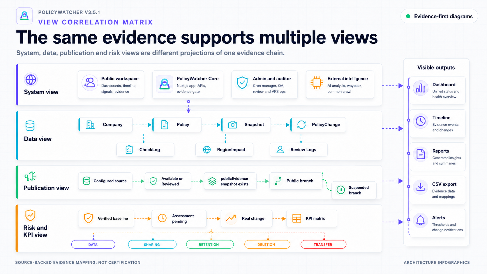
11 View Correlation MatrixScroll horizontally
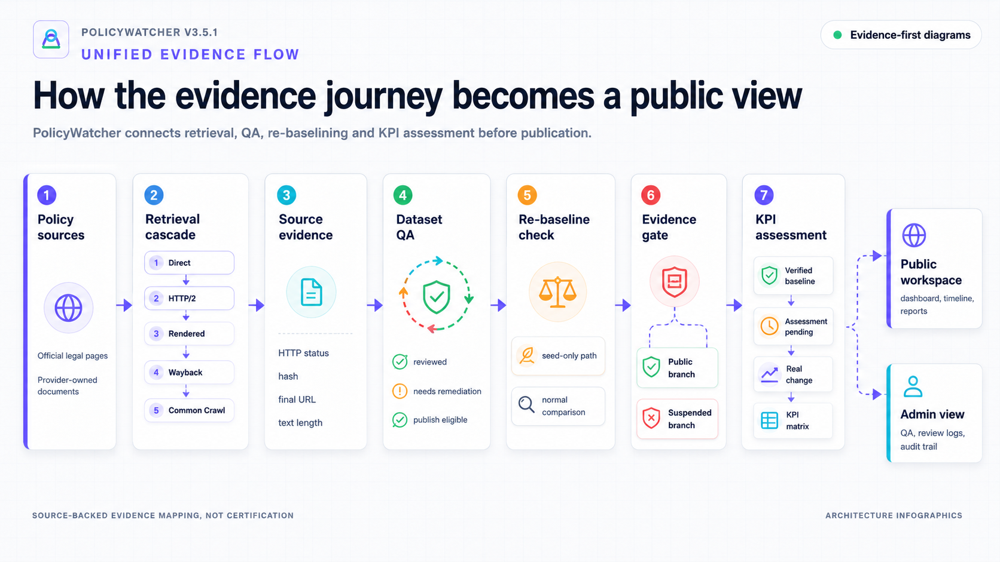
12 Unified Evidence FlowScroll horizontally
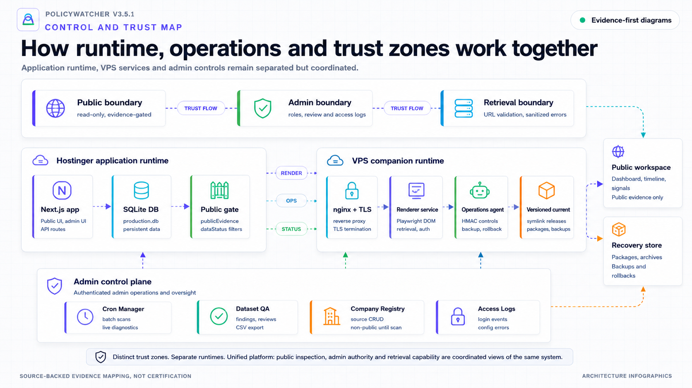
13 Control and Trust MapScroll horizontally